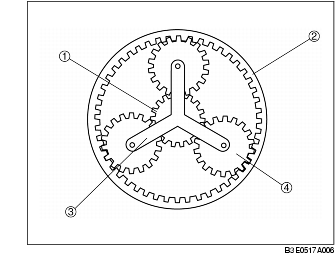
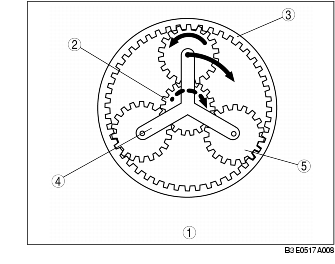
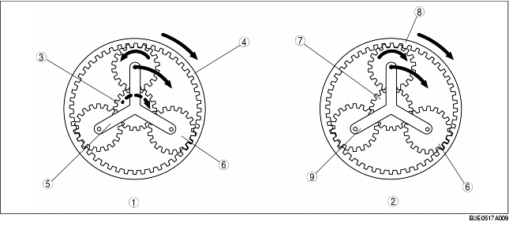
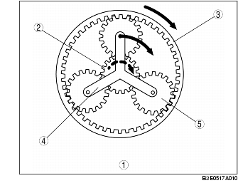
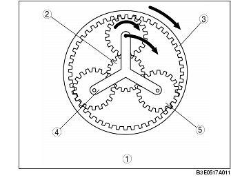
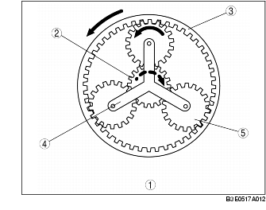

Planetary gear operation
• The planetary gear works as a transaxle when the sun gear and the internal gear are engaged.
• The sun gear, installed inside of the pinion gears, and the internal gear, installed outside of the pinion gears, are engaged with their respective gears.
The sun gear and the internal gear rotate on the center of the planetary gear.

• The pinion gears turn in the following two ways:
Gear ratio of each range
• The relation between each element of the planetary gear set and the rotation speed is generally indicated in the formula below.
(ZR+ZS) NC=ZRNR+ZSNS: formula (1)
In this formula Z stands for the number of teeth, N stands for the rotation speed, and R, S, C stand for each gear element (refer to the table below).

Number of teeth and symbol of each gear
First gear

Gear rotation speed
• Suppose gear ratio in first gear is i1,
i1=NS/NC
• From the result NR=0 in formula (1), the relation between the gear ratio in first gear and the rotation speed of the planetary gear set is indicated in the formula below.
(ZRF+ZSF) NC=ZSFNS
Therefore,
i1=NS/NC= (ZRF+ZSF) /ZSF= (89+49) /49=2.8163
As a result, the gear ratio in first gear is 2.816.
Second gear

.
Gear rotation speed
- • The front internal gear and the rear planetary carrier are integrated.
- • The front planetary carrier and the rear internal gear rotate at the same speed.
• Suppose gear ratio in second gear is i2,
i2=NS/NR
• From formula (1), the relation between the gear ratio in second gear and the rotation speeds of the front and the rear planetary gar sets is indicated in formulas (2) and (3).
(ZRF+ZSF) NR=ZRFNC+ZSFNS: (2) (Front planetary gear set)
(ZRR+ZSR) NC=ZRRNR+ZSRNS: (3) (Rear planetary gear set)
• From the result NS=0 in formula (3).
NC= (ZRR/ (ZRR+ZSR)) NR: (4)
• Here we substitute formula (4) in formula (2).
ZSRNS= (((ZRR+ZSR) (ZRF+ZSF) -ZRFZRR) / (ZRR+ZSR)) NR
Therefore,
i2=NS/NR= (((ZRR+ZSR) (ZRF+ZSF) -ZRFZRR) / (ZSF (ZRR+ZSR))) NR= ((98+37)(84+49) -8998) / (49 (98+37)) =1.4978
As a result, the gear ratio in second gear is 1.497.
Third gear

Gear rotation speed
• Here we have the result on NR=NS.
• Suppose gear ratio in third gear is i3,
i3=NR/NC
• From the result of NR=NS in formula (1), the relation between the gear ratio in third gear and the rotation speed of the front planetary gar set is indicated in the formula below.
(NRF+ZSF) NC= (ZRF+ZSF) NR
Therefore,
i3=NR/NC= (ZRF+ZSF) / (ZRF+ZSF) = (89+49) / (89+49) =1.000
As a result, the gear ratio in third gear is 1.000.
Fourth gear

Gear rotation speed
• Suppose gear ratio in fourth gear is i4,
i4=NC/NR
• From the result of NS=0 in formula (2), the relation between the gear ratio in fourth gear and the rotation speed of the rear planetary gear set is indicated in the formula below.
(ZRR+ZSR) NC=ZRRNR
Therefore,
i4=NC/NR=ZRR/ (ZRR+ZSR) =98/ (98+37) =0.7259
As a result, the gear ratio in fourth gear is 0.725.
Reverse

Gear rotation speed
• Suppose gear ratio in reverse gear is iREV,
iREV=NS/NR
• From the result of NC=0 in formula (2), the relation between the gear ratio during reverse movement and the rotation speed of the planetary gar set is indicated in the formula below.
(ZRR+ZSR) 0=ZRRNR+ZSRNS
Therefore,
iREV=NS/NR=ZRR/ZSR=-98/37=-2.6486
As a result, the gear ratio in reverse is 2.648.